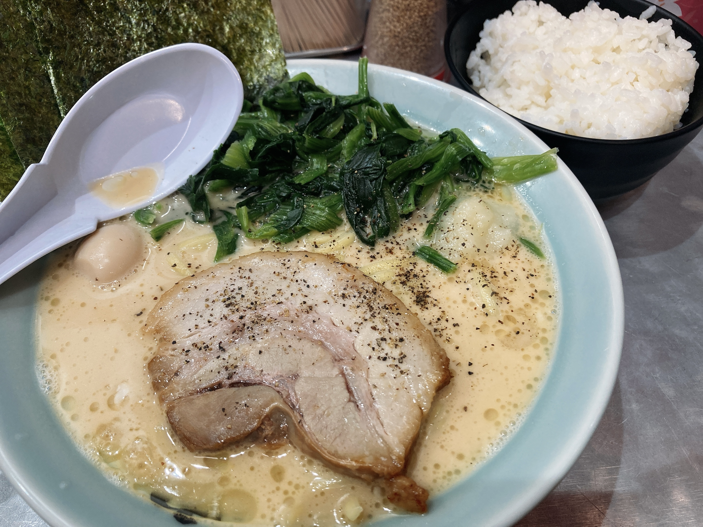
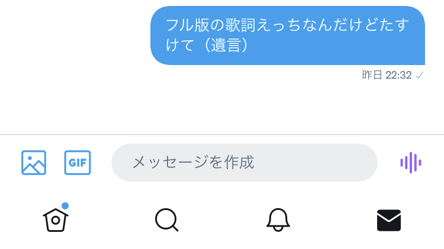

もうまともなタイトル思いつかない
毎日日記を書くのはよいとしても毎日それっぽいタイトル考えるの面倒なんですよね。どうしようかな。
しばらく週2WACCA生活を続けようということで、労働後に自由が丘セガに行ってきました。
ATAMA WARUI予習サボったのでATAMA WARUSUGI pic.twitter.com/XEkT15wovO
— ₍₍⁽⁽🍳₎₎⁾⁾←✏☕300,←⚙4500 (@sal_pipr) August 18, 2021
今作は12の曲の引きが良くていずれすぐ受かりそうなので、さしあたり11を。ATAMA WARUIのスコアがATAMA WARUI。いや、夏休み期間のが丘セガやたら静かでエンジョイ勢まみれで、万一裏ルーン君が発狂でもし始めようもんなら一瞬で私の人権が消し飛びそうなので気が気じゃなかった。すっかりリザルト入ったときにコンソール触り続ける癖がつきました。ほんとは何を喋ってくれるかすごく気になるので、土曜また横ラにでも行こうかなと思います1。五月蝿くて他にもWACCAがたくさんあるゲーセンならなんとかなるんじゃないかなと……。
低難易度初見の調子がよくなくて2~3落ちを量産したので、かわりに13をたくさん触るなど。
13SSS+新規 pic.twitter.com/UmGEqrRnCY
— ₍₍⁽⁽🍳₎₎⁾⁾←✏☕300,←⚙4500 (@sal_pipr) August 18, 2021
意外と順調にSSS+出てたすかる。他にもEternal Ending, BSCS, JINGLE DEATHがSSSまで伸びてくれました。Brain PowerでFCなのに989とかいうのを2回出して悲しい。ああいう左右に降ってくるトリルの精度はもっと改善しないとなあ。
丁度昨日話題に出したパニックポップ☆フェスティバル!!!がSSS+出てくれたのは嬉しかったですね。下の方に降ってくるトリルを取る時の脱力の仕方が上手く掴めてきたかもしれない。前より高bpmについていけている気がします。あと、EVEだったっけな？下埋めのおかげで非四分のリズムの認識力が上がってきたのを感じてよさでした。この調子でがんばりたいわね。
が丘なので魂心家に。

店内暑いんだよなあ。
日曜日とても神妙な顔をしてゲーセンに行ったわけですが、今日はさらに深刻な顔をしてゲーセンに行きました。というのはですね。
— ₍₍⁽⁽🍳₎₎⁾⁾←✏☕300,←⚙4500 (@sal_pipr) August 18, 2021
なんか、まともな作文ができる気がしないのでここには何も書かないでおきます。よくわからない妄言は例の高校同期に聞いてもらうことにしたので。

-
ちなみにステージアップ中に喋ってくれるのか未確認なんですけど、どうなんでしょうね。 ↩︎